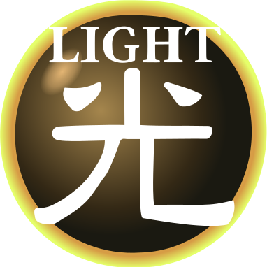

Slifer, O Dragão Dos Céus

[ Besta Divina / Efeito ]
Requer 3 Tributos para ser Invocado por Invocação-Normal (não pode ser Baixado Normalmente). A Invocação-Normal deste card não pode ser negada. Quando Invocado por Invocação-Normal, cards e efeitos não podem ser ativados. Uma vez por turno, durante a Fase Final, se este card foi Invocado por Invocação-Especial: envie-o para o Cemitério. Ganha 1000 de ATK/DEF para cada card na sua mão. Se um ou mais monstros forem Invocados por Invocação-Normal ou Especial no campo do seu oponente em Posição de Ataque: esses monstros perdem 2000 de ATK e, depois, se algum deles tiver o ATK reduzido a 0 como resultado, destrua-o.
ATK/???? DEF/????